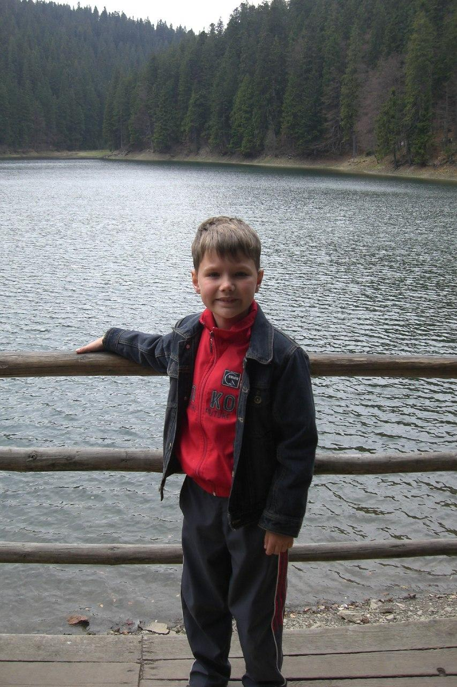
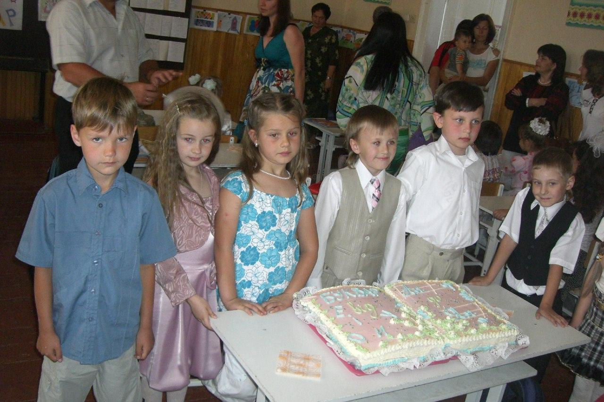

Я родился 7 сентября 2001 года в городе Мукачево, Закарпатская область. Всю свою жизнь я жил в частном доме, и понятия как друзья или знакомые со двора у меня не были развиты. Я дружил разве что с детьми из детского сада. На всей улице у меня была только одна подруга. Девочка моих лет с который мы общались и играли до тех пор, пока она не переехала.
Я не могу сказать, что мое детство было печальным, мне хватало игр во дворе с моей собакой, а так же детей в детском саду.
Но рано или поздно всему веселью приходит конец. Наступает время школы.
Школа
В первом классе я учился в школе №4. В целом, воспоминания об этом месте жуткие. Я попал к интересной учительнице, у которой среди учеников класса была дочь. Как и следовало полагать, её дочь была отличницей и главным объектом любви учителя. Остальные, в том числе и я, подвергались строжайшим наказаниям даже по самой незначительной вине. Поход к директору был прогулкой, а не высшей мерой наказания. Ко всему прочему я подвергался издевательствам со стороны одноклассников, ведь говорил только на русском языке. Моя семья русскоговорящая и я никогда не знал украинского. Сейчас я свободно могу говорить на каждом из них, но тогда были другие времена. Начиная со второго класса, я перевелся в школу №16. Место, где все последующие 10 лет я учился познавать мир, общаться с детьми и социализироваться. Наш класс был довольно странный. Почти каждый год менялся состав. Кто-то приходил, кто-то уходил. Вспоминаю времена, когда появился первый кнопочный телефон, и мы всем классом стояли вокруг одноклассника, с открытым ртом наблюдая как он играет в змейку. До 9-го класса мы были общим коллективом, все дружили и помогали друг другу. Начиная с 10-го, нас объединили с параллельным классом, что поделило наш коллектив на мелкие группки по интересам. Всех все устраивало, но я понял, что прошло то время, когда мы были командой. Теперь каждый сам за себя. Но вот чего не отнять, так это крутого выпускного. Такого крупного события у нашей школы ещё не было. Его запомнят на многие годы, уж я на это надеюсь.

Первый класс боли